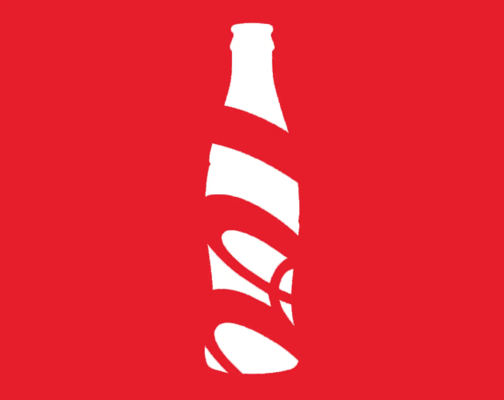
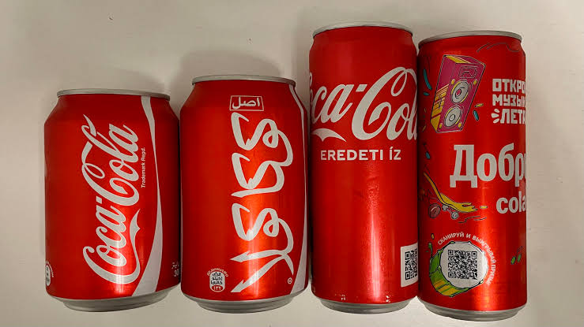

2. Construir activos de marca reconocibles
Un rebranding debería crear elementos que permitan reconocer la marca rápidamente.
Estos elementos se conocen como activos distintivos y ayudan a que la marca sea más fácil de recordar para los estudiantes.
Jenni Romaniuk y el Ehrenberg-Bass Institute los definen como elementos distintos del propio nombre capaces de activar la marca en la memoria: colores, formas, símbolos, personajes, tipografías, sonidos, slogans, estilos gráficos, entre otros.
Un elemento visual no se convierte automáticamente en un activo distintivo de marca solo porque esta lo utilice.
Para que realmente funcione como activo debe desarrollar dos características:
Prevalencia: muchas personas deben asociarlo con la marca.
Unicidad: esas personas deben asociarlo principalmente con esa marca y no con muchas otras.
Por eso, cambiar continuamente los elementos visuales puede impedir que lleguen a convertirse en verdaderos activos.
Aplicado al PASE
El nuevo sistema visual debería seleccionar algunos elementos con potencial para convertirse en señales reconocibles:
- una combinación de colores;
- una determinada forma;
- un símbolo;
- un tratamiento tipográfico;
- una composición característica;
- un recurso gráfico recurrente;
- una forma de comunicarse.
Después, estos elementos deberían aparecer sistemáticamente en publicaciones, documentos, señalización, eventos y materiales.
El objetivo sería llegar al punto en que un estudiante vea una pieza sin haber leído todavía “PASE” y sospeche correctamente que pertenece al PASE.
Ejemplo de aplicación: Coca-Cola
La botella de Coca-Cola tiene una forma única en el mercado. Está diseñada así para destacar y ser fácilmente recordada. Esto llega al punto en que las personas pueden ver solo la silueta de la botella y sin leer el nombre saben muy bien de qué marca se trata.

El logo de Coca-Cola es un activo distintivo tan bien trabajado que puede ser visto en diferentes sistemas de escritura y seguir siendo reconocible.

Eso es precisamente lo que se busca con un activo distintivo: reducir la dependencia del nombre escrito para identificar una marca.
Resulta importante destacar que para tener un activo distintivo de alto valor no basta con tener algún elemento único llamativo: es necesario hacer una labor de publicidad adecuada. Una marca puede tener un elemento con gran potencial de convertirse en activo distintivo, pero si no lo publicita correctamente es posible que la gente no llegue a reconocerlo.
Otro ejemplo histórico interesante: Hathaway
En 1951, David Ogilvy colocó un parche en el ojo del modelo de una campaña para Hathaway Shirts.

El parche no explicaba ninguna característica de la camisa. Su función era crear lo que Ogilvy denominaba story appeal: algo visualmente peculiar que provocara curiosidad. Este parche terminó convirtiéndose en un activo distintivo para Hathaway.
Ogilvy recuerda que había considerado numerosas posibilidades antes de utilizar el parche. Según la propia historia publicada por Ogilvy, el primer anuncio generó un impacto extraordinario y las camisas disponibles se agotaron. El personaje continuó utilizándose posteriormente.
El aprendizaje para el PASE no es:
Un elemento constante y reconocible puede convertirse en parte de la memoria de una campaña o una marca.
Preguntas clave
Antes de introducir un potencial activo distintivo hay que preguntarse:
¿Queremos seguir utilizando este mismo elemento sin cambios durante años?
Si la respuesta es no, probablemente ese elemento no debería ocupar un lugar central en la identidad y habrá que buscar otro.
Referencias
- Romaniuk, J. (s. f.). Brands of distinction. Ehrenberg-Bass Institute for Marketing Science. https://marketingscience.info/news-and-insights/brands-of-distinction
- Ogilvy, D. (1963). Confessions of an advertising man. Atheneum. https://search.worldcat.org/title/244600
- Ogilvy. (2024). Ogilvy 75: 75 years of iconic campaigns. https://www.ogilvy.com/ideas/ogilvy-75-75-years-iconic-campaigns